Four referendums on 11 October 2026 — do the numbers add up?
These tests found no clear signs of manipulation
Count areas instead of votes, and the winner changes
YES led in 62% of regions and 60% of polling stations on abolishing the RTV Slovenia fee.
YES led in 62% of regions and 56% of polling stations on the Parliamentary Investigations Act.
What was decided on 11 October 2026
Voters received four ballots. One referendum could decide whether a law stayed in force; the other three asked for voters’ views without making a binding decision. Turnout across Slovenia was 54.6%.
Parliamentary Investigations Act (ZPPre-B)
Social assistance
Local voting rights
RTV Slovenia fee
Same votes, different rules — different results
I counted the same votes under different rules. The examples below show which results would change. These are hypothetical comparisons, not the rules used in the referendums.
More areas voted YES, but more people voted NO
Abolishing the RTV fee lost nationally by 546 votes. But YES led in 5 of Slovenia’s 8 regions, against 3 for NO; in 46 of 88 districts, against 42; and in 1,857 polling stations, against 1,198. Counting areas equally would therefore change the winner. The investigations law also changes winner when counted by regions or polling stations.
Election-day voters favoured YES on all four questions
Among votes cast at polling stations on 11 October, YES led on every question, including by 10,255 votes on the investigations law. Early voting involved 75,000+ people, the second largest number in Slovenian referendum history. Early and postal voters favoured NO on all four questions. These votes, about 9% of ballots, changed the overall result on the two rejected questions.
How many extra votes would change the result?
547 extra YES votes would reverse the RTV-fee result; as an advisory vote, that would not itself abolish the fee. 23,148 extra YES voters — 3% of those who stayed home — would keep the investigations law in force. A different hypothetical change also matters: add 664,854 names to the voter roll, keep every vote the same, and NO would fall below the constitutional minimum needed to reject the law.
Rule 1 · Give each area one win
The actual referendums add up votes across Slovenia. What if each region, district or polling station instead counted as one win, regardless of size? Here is what happens with the same ballots:
| Question | National | 8 units | 88 districts | 3,083 stations |
|---|---|---|---|---|
| Parliamentary Investigations Act (ZPPre-B) | NO 51.26% | YES 5 : 3 ← | NO 48 : 40 | YES 1728 : 1327 ← |
| Social assistance | YES 60.54% | YES 8 : 0 | YES 71 : 17 | YES 2602 : 463 |
| Local voting rights | YES 55.30% | YES 6 : 2 | YES 64 : 24 | YES 2213 : 842 |
| RTV Slovenia fee | NO 50.03% | YES 5 : 3 ← | YES 46 : 42 ← | YES 1857 : 1198 ← |
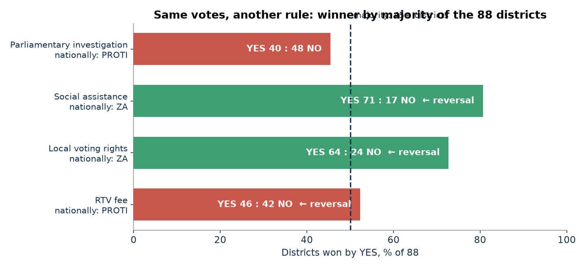
Rule 2 · Count election-day votes separately
YES led by 10,255 to 208,991 votes among election-day polling-station ballots. Early and postal voters favoured NO on every question. Including those ballots, about 9% of the total, changed the overall result on both rejected questions. All of these ballots belong in the actual count.
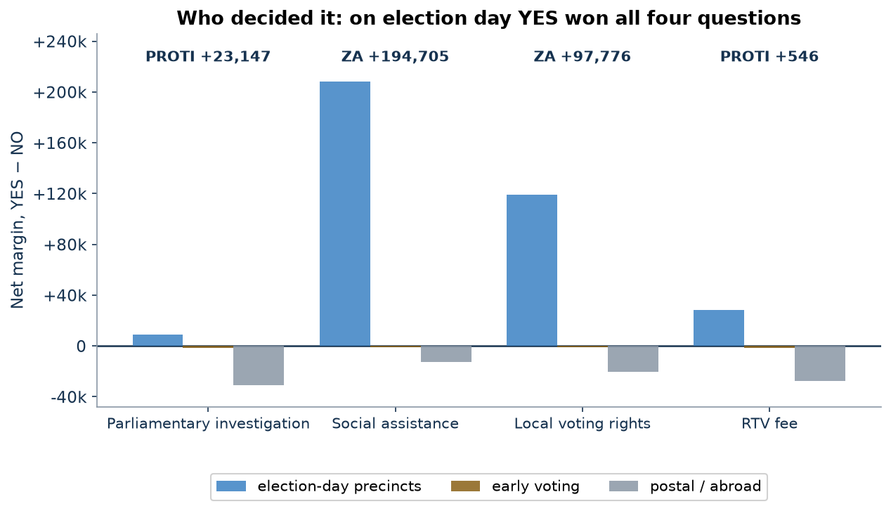
Rule 3 · Draw districts to favour one side
Slovenia does not decide referendums by districts. I tested a hypothetical map of 88 equally sized districts, drawn to help the side that lost nationally. On the close questions — RTV fee 51.7% YES and investigations law 50.5% YES in election-day votes — that side could win 45 of 88 districts. Against a 60.5% majority, the most favourable map in this test gave it only 17.
Rule 4 · Require enough registered voters to vote NO (Article 90)
Rejecting the investigations law required both a NO majority and NO votes from at least 1/5 of registered voters. The 472,444 NO votes cleared that minimum by 132,971. The voter roll therefore matters too: with 664,854 more registered voters (+39%), the same NO total would fall below 1/5 and the law would stay in force.
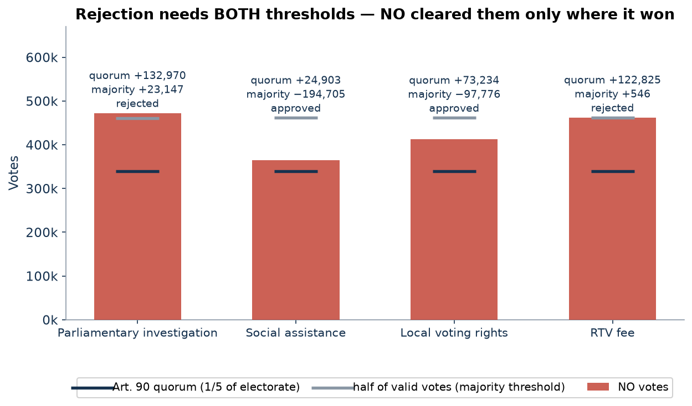
What the checks found
I ran eight groups of statistical checks on the official polling-station data, using code anyone can inspect. Taken together, they do not establish manipulation. The details below explain the findings and what the checks can miss.
Votes at unusually high turnout (Shpilkin method)
The high-turnout area contains at most 1% of YES votes and 0.45% of NO votes. Leaving it out would change any result by at most 0.15 percentage points. These are not automatically fraudulent votes.
Adding ballots can raise both turnout and one side’s vote total. This method fits a bell-shaped turnout curve and counts votes beyond a chosen boundary. I used the other three referendums, with the same stations and voters, to set that boundary at 70.1%. Across the four questions, this area contains 4,135–4,651 YES votes (0.89–1.00% of YES totals) and 1,297–1,812 NO votes (0.41–0.45%). It continues the city–rural pattern rather than forming a separate group. Removing it would change any result by at most 0.15 percentage points. The estimate alone does not identify fake votes.
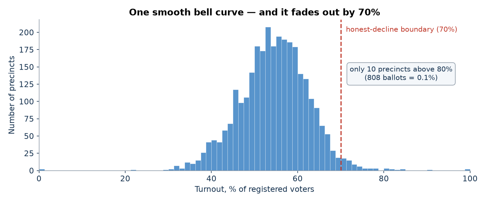
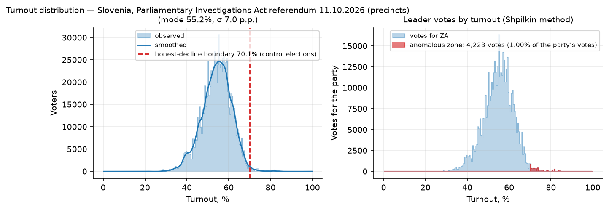
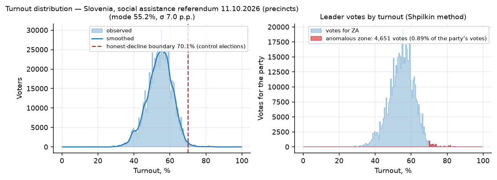
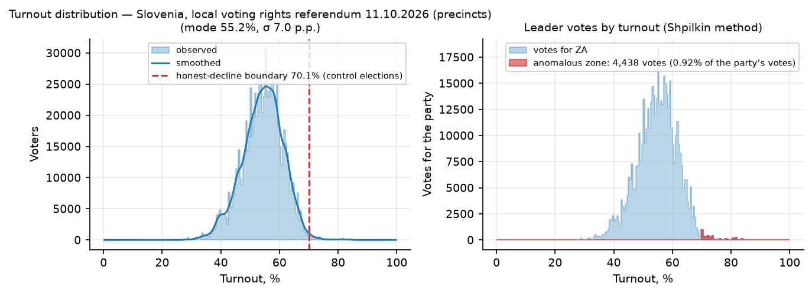
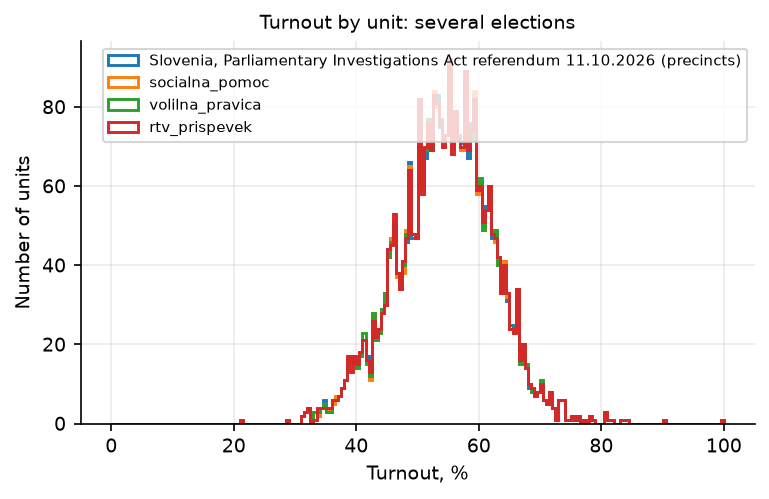
Does high turnout come with unusually high YES support?
The points form one connected group. There is no separate high-turnout, high-YES group of the kind that added ballots can produce.
Added ballots can create a separate group of stations at 80–100% turnout and 80–95% support for one side, with support for the other side falling. Here YES support rises gradually: about 4 percentage points for each 10-point increase in turnout. The weighted correlation, a measure of how closely the two move together while accounting for station size, is +0.27…+0.38. There is no sudden change at high turnout. Only 10 small stations exceed 80% turnout, accounting for 0.1% of ballots.
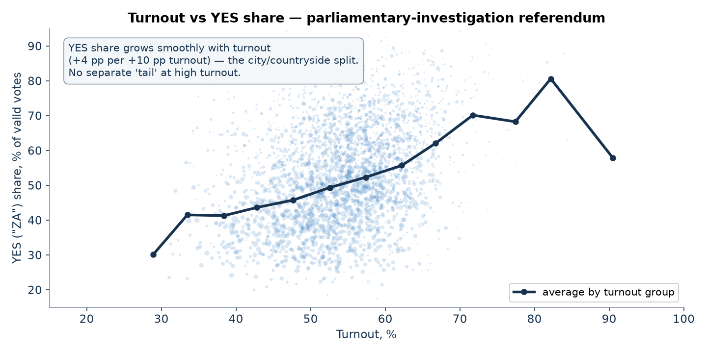
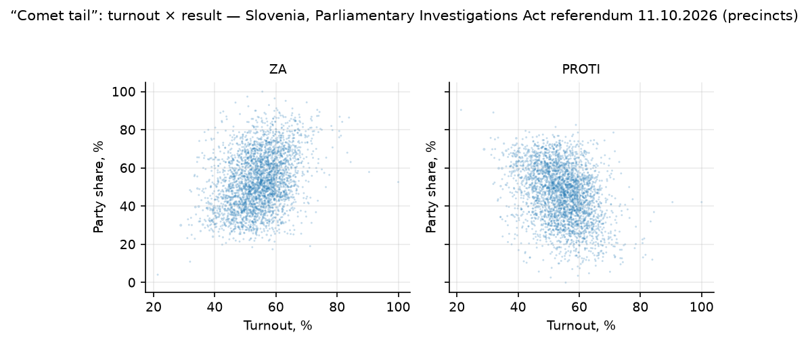
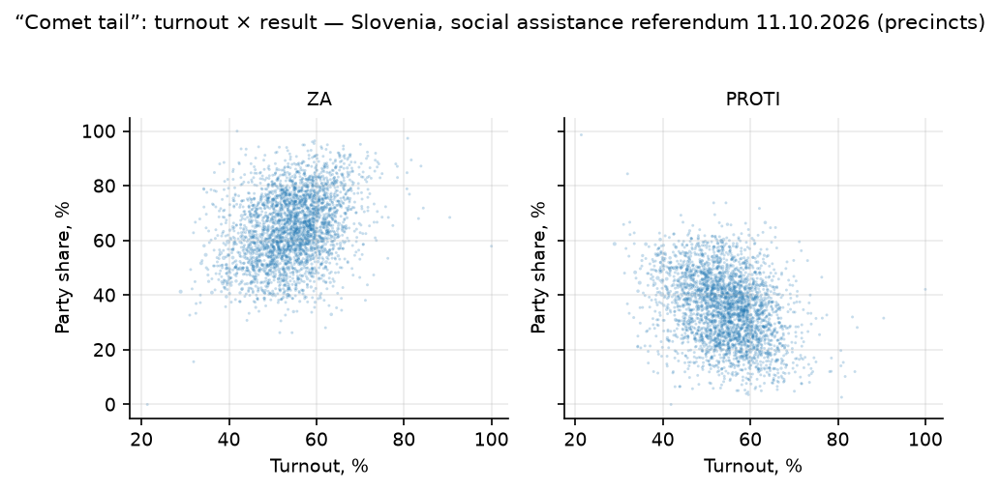
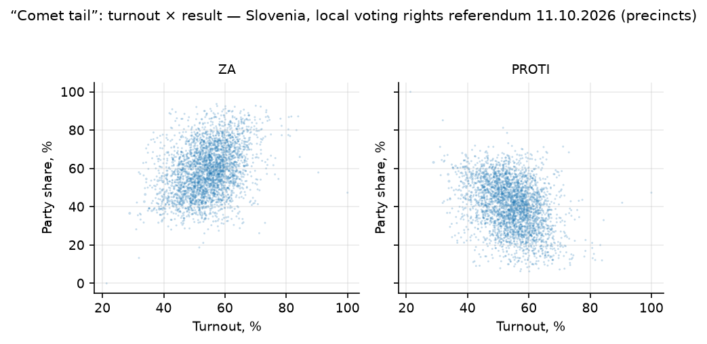
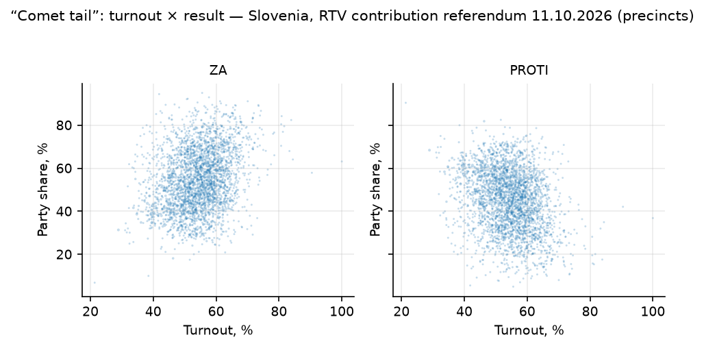
Look for a separate high-turnout group (Klimek method)
The model splits the data into two groups, but both have ordinary turnout. It does not find the separate group at 80–100% turnout associated with some forms of manipulation.
Klimek and colleagues (PNAS 2012) fit two groups to a chart of turnout and vote share. Some manipulated elections show a separate group at 80–100% turnout with very high support for one side. The model also selects two groups here, but both sit at 51–56% turnout within one connected pattern. All four referendums look similar (vote-share correlations 0.94–0.96). The separate high-turnout group is absent. Only two stations exceed 85% turnout, with 19 and 21 voters.
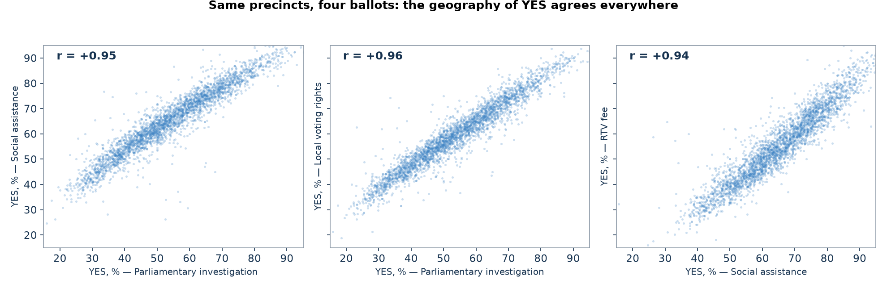
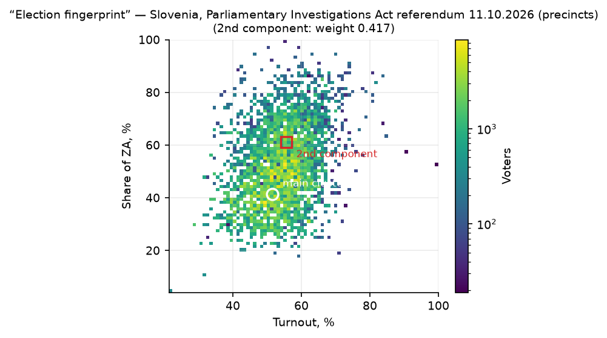
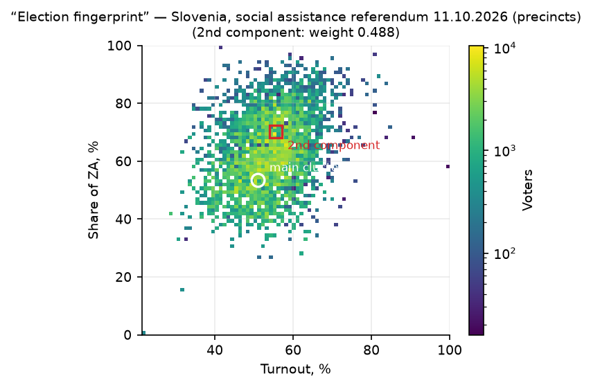
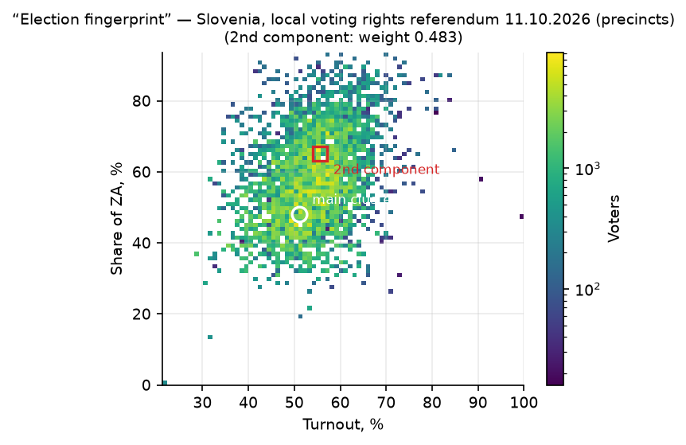
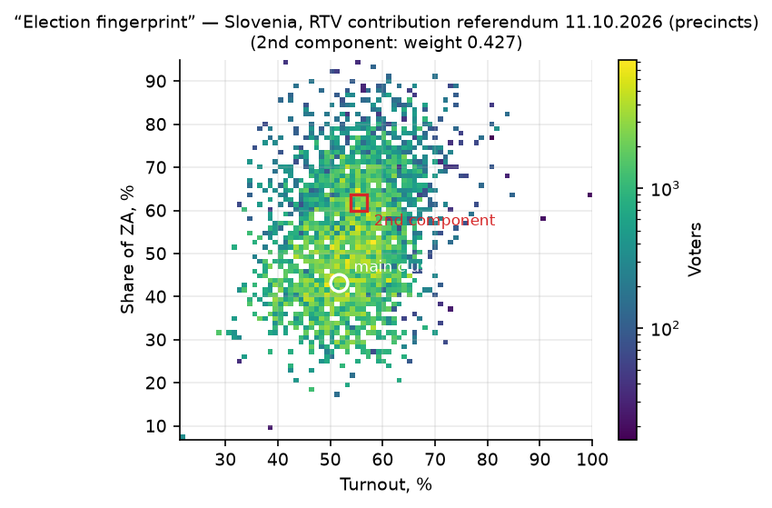
Are round percentages unusually common? (Kobak method)
Whole percentages of turnout and vote share are no more common than expected from chance (all test scores ≤ 1.3). This check has limited sensitivity in small polling stations.
Invented totals can favour round percentages. I compared the frequency of whole percentages and multiples of 5 with repeated random simulations based on the same data (Monte Carlo). The z score measures the distance from that simulated expectation: all scores are within ±1.3 (turnout −0.0…+0.4; YES share ≤ +1.1; NO share ≤ +1.3). Nothing stands out on this check. With about 460 voters per station, however, the test can miss substantial changes; the self-test below shows this limit.
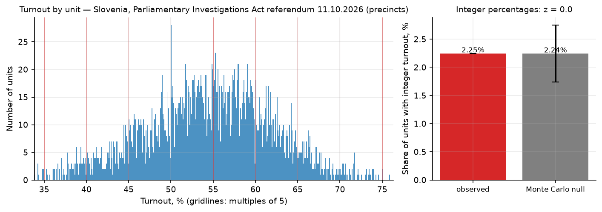
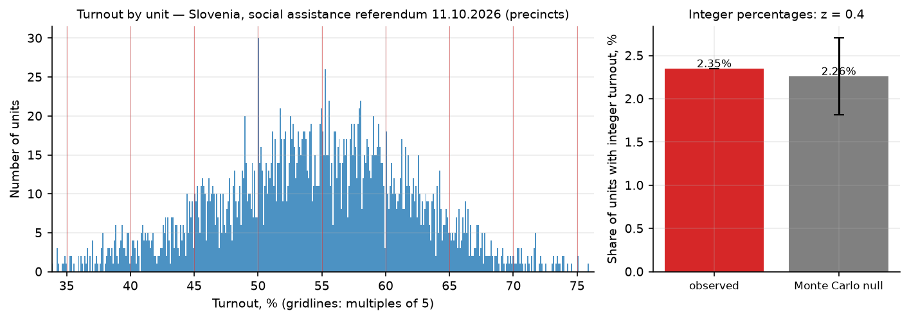
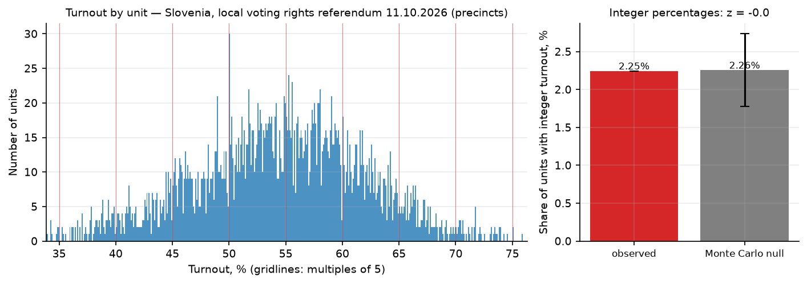
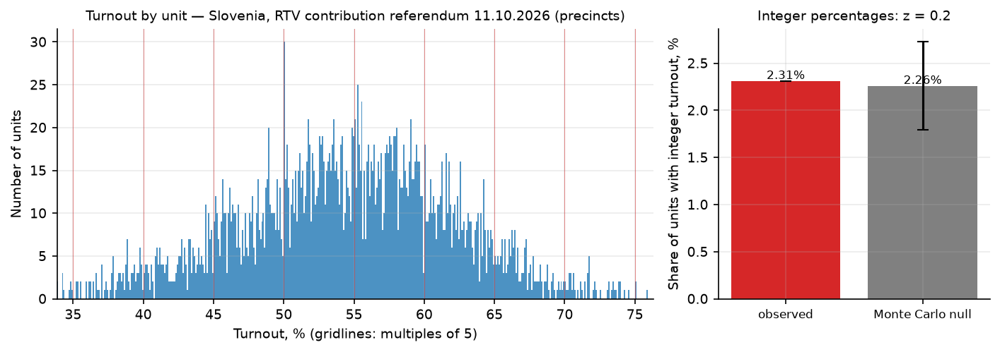
Do vote-count digits look unusual? (Benford and last-digit checks)
Of 16 checks, 13 raised no concern and 3 were borderline. None remained unusual after allowing for the number of checks run. The borderline results do not show an excess of round numbers.
These checks ask whether the last digit, or the second digit compared with Benford’s expected pattern, is unusual. Made-up counts can sometimes favour endings such as 0 and 5, but digit patterns alone cannot establish fraud. Of 16 checks (two sides × two digit checks × four questions), 13 raised no concern. Three borderline results (Monte Carlo p = 0.005–0.12) showed more 4s and fewer 0s. None passed the stricter Bonferroni threshold of 0.003, which allows for the chance of a false alarm when running 16 checks.
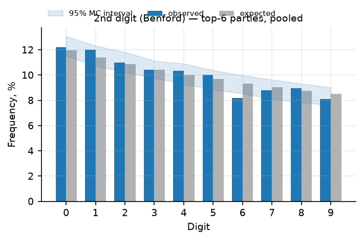
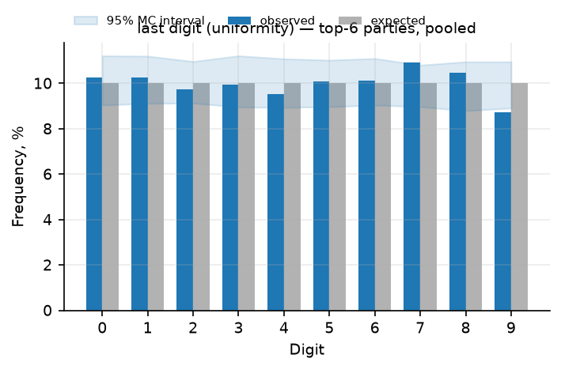
Find polling stations that differ from the others
A few dozen stations stand out. All are small (16–342 voters), and their differences point in different directions rather than consistently helping one side.
I used two ways to find unusual stations. The first compares a station with the middle value in its district, flagging large differences (robust z-score |z| > 4). The second, Isolation Forest, compares turnout, the leading side’s vote share, invalid ballots and station size. The first flags 22–40 stations per question (0.7–1.3%); the second is set to flag 30 (1%). All are small, with 16–342 voters. Differences favour different sides, and many of the same stations stand out on all four questions, including one with 19 voters and 100% turnout. This does not show a shared pattern of manipulation. The charts show the RTV-fee question; the others look similar.
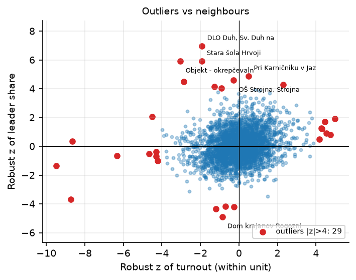
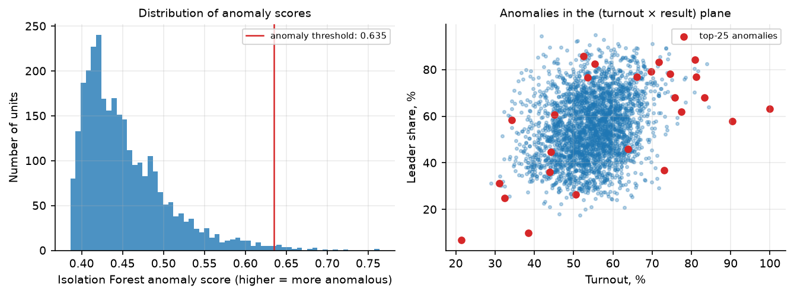
Are identical results too common?
Identical YES, NO and invalid-vote totals recur 38–60 times per referendum, compared with 37–53 expected by chance. This gives no clear evidence of copied results.
Copied results could create too many identical sets of YES, NO and invalid-vote totals. I found 38–60 repeated sets per question, compared with 37–53 expected from repeated resampling of the data (bootstrap). In the investigations question, 37 of 38 matching pairs were in different districts. I also compared YES counts between questions: 412 stations had exactly the same count, while 798 differed by one vote. Exact matches do not form an unusual spike. These checks give no clear evidence of copying.
Can these checks detect deliberately added fake votes?
I added fake ballots to a copy of the data. The high-turnout vote estimate grew 12-fold. This shows that the method can detect the simulated change; it does not mean every kind of manipulation would be caught.
I tested the tools on a copy of the real data with fake ballots added. Turnout rose by 5–35 percentage points in 10% of stations; 60–95% of added ballots went to the leading side. The Shpilkin high-turnout estimate grew 12–13 times, from 4,135–4,651 votes to 51,792–59,247. In a separate test, I rounded turnout to whole percentages at 5% of stations. The round-number test’s z score rose only to 0.8–1.6. With about 460 voters per station, that check has limited sensitivity. Detecting the first simulation does not guarantee that every kind of manipulation would be detected.
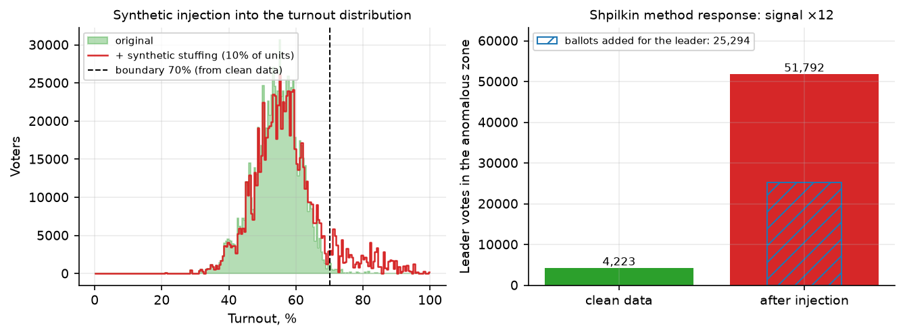
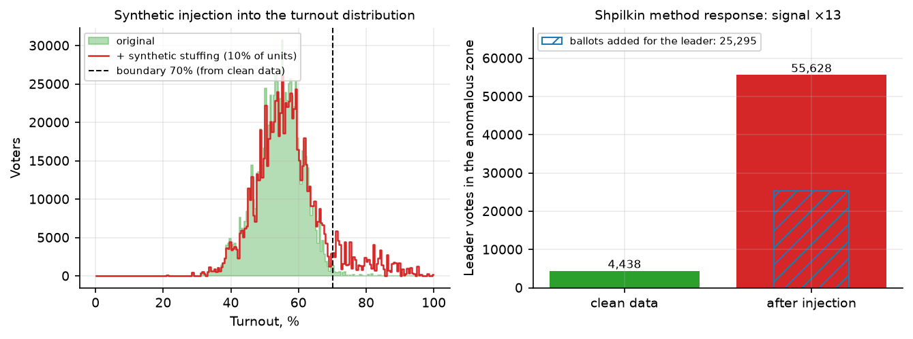
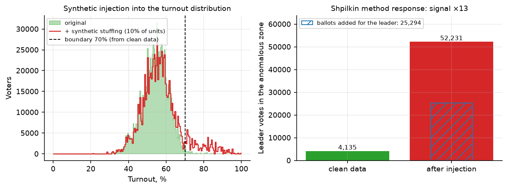
Data and how to repeat the checks
- Source: official machine-readable results of the State Electoral Commission (DVK) at volitve.dvk-rs.si — precinct-level files for all four referendums, downloaded 13 October 2026 (server snapshot 12 October 2026, 99.98% counted).
- I checked my totals against Wikipedia’s summary table. They match to the exact vote on all four questions.
- Reproduce and inspect: analysis-tool, forensic report, paradox analysis and the project repository.